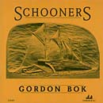

Reviews of Gordon Bok's Music
- Other Eyes
- Gordon Bok in Concert
- In the Kind Land
- Neighbors
- Harbors of Home
- Schooners
- Concert Reviews
- Quotable Reviews
- Support The Arts
Schooners
by Gordon Bok
THD-CD005, (c) (p) 1992
available at Timberhead Music
Schooners Review
from Amazon.com Customer Reviews
10 of 11 people found the following review helpful:
AMERICA'S VOICE OF THE SEA, August 22, 2001
Reviewer: Larry L. Looney (Austin, Texas USA) - See all my reviews
There should be some sort of campaign mounted to have Gordon Bok designated as an official national treasure. Through his music, he has given us the gift of preserving so much in the way of stories, songs, of a very way of life about which so many of us know and understand so very little. His love of the ocean, of sailing ships, of the people who make both their way of life -- and, with incresing difficulty, their trade -- have found their way through his heart and soul and his music, to give us a glimpse into this world.
This was the album that introduced me to Bok's music -- and the subsequent journey has been a very rewarding one, several of his recordings coming to be counted among my favorites. He is a multi-talented man -- an accomplished singer, whose resonant baritone takes to these songs like a well-crafted ship to the water; a talented instrumentalist, being proficient not only on guitar, but on viol and cellamba (his own invention, a cello with a viola de Gamba neck) as well; a fine songwriter; and, rarest perhaps of all, a respectful and sensitive interpreter of songs, whether traditional or written by others, historical or contemporary. All of these talents and abilities are displayed on this collection -- Gordon even did the woodcarving on the cover.
Some of the most moving songs I've ever heard can be found on this cd -- the presence of any one of them would have made its purchase worthwhile. He says in the liner notes that Lois Lyman's two songs about the Wiscasset schooners were his impetus to assembling this recording. Lois' song 'Wiscasset schooners' opens the album -- she and her husband Ross join Gordon in singing it. The theme of time passing, of the changing of eras and ways of life, is raised here beautifully, as the song speaks of the work done by the ships in their heyday, of their history, of their fate. The chorus gently comforts them, as one would a loved one who is about to pass from this plane of existance: 'But the winter is upon you now, and time is passing slow, and the tides ebb and flow down below'. The constant is the sea herself -- all of those who think they have conquered or tamed her are fooling themselves. Time marches on and we follow, sometimes comfortably, sometimes kicking and screaming.
The second track is 'Harp song of the Dane women', a poem by Rudyard Kipling that Gordon has set to music -- and done so to wonderful effect, accompanying it in his inimitable style on his 12-string guitar. We can feel the ache of the women who are made into widows by the sea -- sometimes temporarily, sometimes in a more permanent, tragic sense -- trying to understand the pull that it has on their men. 'Jericho', written by Bok along traditional lines, could easily be passed off as being a hundred years old or more -- that's how comfortable and competent he is in his craft. 'Spirit song of George's Bank/The ghostly sailors' is a fine example of a ghost story (of which the sea yields many) told in song. Gordon's rendition never fails to give me chills. 'Liza Jane' is a rather humorous song about a vessel that seemed to be plagued by bad luck and odd events.
One of the standout tracks here, for me, is Judy Goodenough's touching composition 'Boat of silver', again touching, I believe, on the theme of time -- and lives -- passing inevitably by: 'For swiftly come all the tides returning; swiftly go then and will not stay. There is no boatman can net the morning; there is no boatman can net the day'. It's easy to understand how the sea -- and living aroud her -- could offer up so many metaphors to both permanence and change.
The album continues with a story of a love that 'almost was', told in a Bok original, 'The schooner Ellenmore', which he tells us is based on a true story.
'Crossing the water', by Joanne Davis, follows -- another personal favorite of mine. I get a very spiritual feel from this lyric, but in a mysterious rather than a traditional sense -- but then, I think sprituality is best experienced as a mystery, so maybe that's what draws me into this song to such an extent: 'You may row the boat forever, believing you are free. You cannot cross the water, you can only row to me'.
'All my sailors' is Gordon's tribute to all of the many people who have helped him through the years, and a touching, honest one it is. 'The death ship' is next, another eerily effective ghost story of sorts. Bok follows it with 'Schooner Fred Dunbar', words of Amos Hanson that he has set to music -- in a lighter vein, a perfect change from its chilling predecessor. An instrumental follows, 'Capt. Dave's delight', played by Bok on cellamba and the talented Carol Rohl on harp. 'Another bay', composed by Robin Chotzinoff, is next, telling the story of families living on Long Island, NY, who are finding it more and more difficult to make a living from the sea in these modern times -- another song of change and the challenges it brings. Then comes 'Sailor's carol', a Christmas song from the point of view of sailors who are spending that time at sea rather than at home -- some haunting images here as well. A song by Charles Dibdin from the 1700s, 'A sailor's consolation', follows, in which a sailor justifies living what appears to be a dangerous life at sea by pointing out all of the risks run by those who choose -- foolishly, he thinks -- to remain on land. Lois Lyman's second contribution to this collection, 'Karl Edstrom of the Hesper' is next -- it conveys an amazing, palpable link to history, being based on a letter from a man who had sailed on the Hesper, recalling some of the things he had seen and experienced during that time.
The next song, by Larry Kaplan, is 'Song for the Bowdoin' -- this is one of the most 'perfectly written' songs I've ever heard anywhere, and it introduced me to a songwriter whose work I have come to treasure (see Larry's excelent recording WORTH ALL THE TELLING). The song vivdly recounts the history of the ship and wonders gently if she'll sail again: 'And now you've got hard times, and now you lie still, and you're fast to the anchor and chain, broken and tired, and the winds pass you by -- but you're bound to go sailing again'. The ship, by the way, was restored, and did take to the waves again.
The album ends, fittingly, with another Bok original, 'All the dear old vessels', a song to the spirit embodied in the sailors who built, worked and kept the schooners afloat, and to the ships themselves. The song reminds me of a toast to well-being and long life.
The songs on this album are not what most people would consider 'sea shanties', although a couple of them might fall loosely into that category. These are ballads and laments, story-songs (of which Gordon Bok is a master), lovingly rendered and accompanied, for us to treasure, from which we who have never lived the lives celebrated here might gain a tiny taste of what it must be like, an appreciation of the difficulties, dangers, joys and rewards of such a life. A great singer can take a song, turn it into their own -- no matter what the source -- and both place the listener inside it and it inside the listener. Gordon Bok is a craftsman at his trade, in the truest sense of the word -- he does this so skillfully and gently that it seems effortless. This album is one that I know I will return to again and again -- the songs here are ageless, and will always have their stories to tell.
Gordon Bok: A Belated Appreciation
by Patrick Byrne; published online Feb 09, 2011. Reprinted here with permission.Studio of Musical Arts LLC
Yesterday, while skimming through the mind-numming collection of music available at the iTunes Store, a name from my past flashed through my head: Gordon Bok. Many years ago, in the early Seventies, a member of my adult choir at St. Ignatius parish in Chicago had lent me her cassette of this “new folk singer with a fabulous voice.” The singer was Gordon Bok. I seem to recall that the choir member’s name was Genevieve. At any rate, I listened to the cassette and was amazed. Gordon Bok did have a wonderful bass voice. Well, I eventually returned the cassette to Genevieve and life moved on. I never had the opportunity or the money to add his cassette to my collection. A haunting album from 1972.
Back to iTunes and 2011. A search quickly led me to Gordon Bok’s 1972 release Schooners. What a fantastic album! It is no wonder that it has haunted me for some forty years. Hearing it again was like reuniting with an old BFF from my school days. As its name implies, Schooners is a collection of sea-faring songs performed by Mainer Bok joined by a nice mixture of other voices and acoustic instruments. While the songs are taken from various sources ranging widely in terms of geography and time, they all fit together as a piece so that Schooners has the character of a song cycle a la Schubert. Gordon Bok’s voice is incredible and is perfectly matched to these rough-and-tumble songs of the sea and the occasional sentimental ballad of home-sickness or absence. For more about Gordon Bok you can visit his web site or, better yet, buy your own copy of Schooners at the iTunes store.